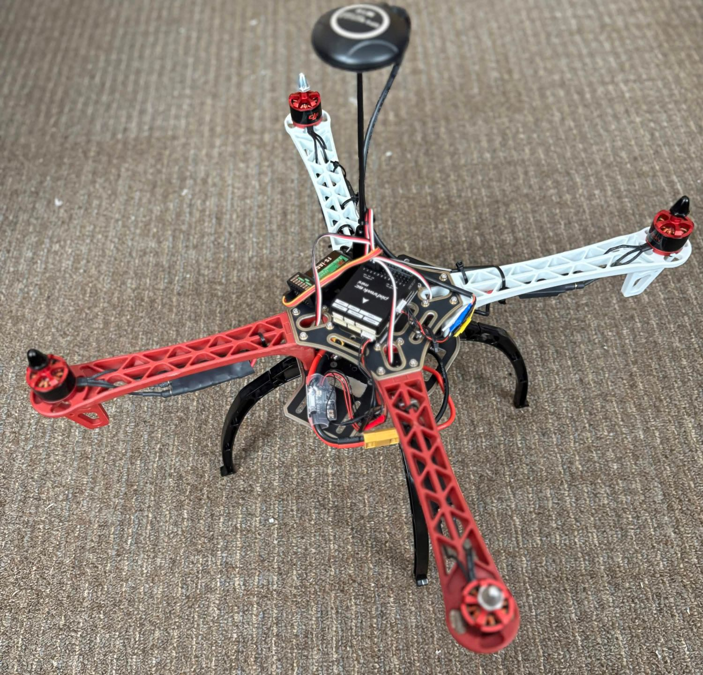

Project 01 · Jun 2026 – Present
Autonomous Payload Quadcopter
A self-built F450-frame quadcopter designed to carry and release a liquid payload with no operator input, splitting flight control and vision processing across two computers.
Built from the frame up.
An F450 frame and four brushless motors, with the ESCs soldered and wired by hand.
Two computers. One job each.
A Pixhawk 6C mini flies the aircraft. A Raspberry Pi companion computer handles vision, so image processing never competes with the flight-control loop.
GPS on a mast.
An M10 GPS module on a raised mast, being integrated for waypoint navigation.
Next: find the target, release the payload.
An OpenCV pipeline for target tracking, and a MOSFET-switched water pump for the payload.

How it's built.
- Pixhawk
- Raspberry Pi
- OpenCV
- Power electronics
- Embedded systems
- Paired a Pixhawk 6C mini flight controller with a Raspberry Pi companion computer so vision workloads never compete with the flight-control loop.
- Designed a MOSFET switching circuit (IRF520 driver) to actuate a water-pump payload from GPIO, isolating logic signals from pump inrush current.
- Built the power distribution around a 5V UBEC, separating the logic rail from high-current ESC loads for stability under full throttle.
- Currently integrating an M10 GPS module for waypoint navigation and an OpenCV pipeline for autonomous target tracking.
Build photos.
2 photos

Photo 1 of 2
Key components.
- Frame
- F450
- Flight control
- Pixhawk 6C mini
- Companion
- Raspberry Pi, for vision
- Payload
- Water pump on an IRF520 MOSFET driver
- Power
- 5V UBEC logic rail, separate from ESC loads
- Navigation
- M10 GPS (integrating)
- Vision
- OpenCV target tracking (integrating)
Next project
PX4 SITL Experiments ›